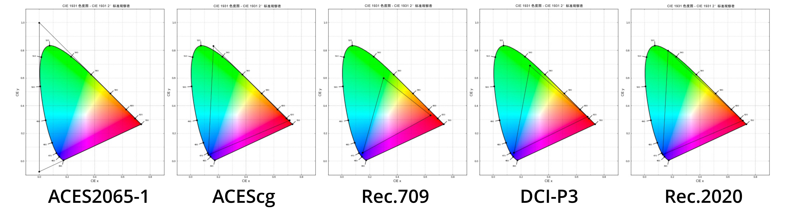
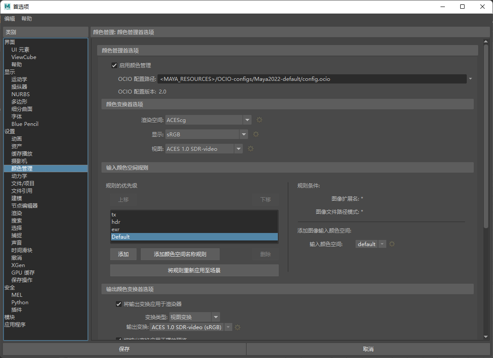
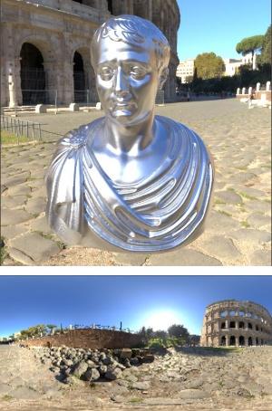
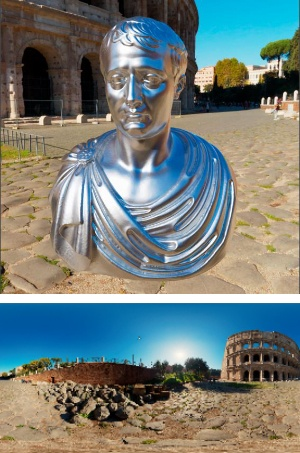
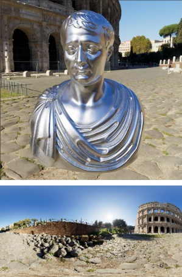

现在，Maya 2022+ 中的默认配置使用 ACES，因此无需执行进一步操作。
| sRGB | ACES |
本教程提供有关如何配置颜色管理以处理学院色彩编码系统 (ACES) 的 OpenColorIO 实现的信息以及 ACES 的简要介绍。本文分为理论和实践两部分。在进入实践部分之前，理论部分将帮助您了解 ACES 的一些基础知识及其工作原理，并考虑设置颜色管理的一些细微差别。
学院色彩编码系统 (ACES) 是一个免费、可扩展且独立于设备的颜色管理和图像共享系统，由美国电影艺术与科学学院赞助开发。它也是一组用于处理颜色、编码和变换的技术规范。该系统可以将数字图像的所有数据存储在同一数学空间中，这样可以在不同部门之间传递工作材料时实现更加一致的工作流。同样重要的是，ACES 可以创建具有高动态范围和宽色域的归档材料，甚至考虑到了未来可能的设备。
一些 ACES 功能包括：
广泛的颜色、灯光和曝光。在各种显示设备上显示可预测的图像。保留全部高光、阴影和颜色。简化来自不同摄影机的图像的匹配。更准确的颜色显示，没有错误的颜色值。在线性颜色空间中工作。在图像的明亮区域上没有过度高光和区间限定。更多...
ACES 包含多个组件：
输入设备变换 (IDT) - 从输入材质进行颜色转化。称为“输入变换”更加适合。引用渲染变换 (RRT) - 使用 S 形色调曲线（输出的图像准备），从场景参考空间到显示参考空间进行颜色变换。输出设备变换 (ODT) - 变换为输出设备，如 Rec.709、DCI-P3、Rec.2020 等变换。在实践中，RRT 和 ODT 被合并，我们称之为“输出变换”。
ACES 系统的一个优点是，它为各式各样的显示器和投影仪提供输出变换。您需要根据以下因素选择适合您情况的相应输出变换：
您的设备（显示器或投影仪）及其校准方式。从简单的 sRGB 显示器，到校准为 Rec.2100-PQ 的 HDR 显示器，再到校准为 DCI-P3 的数字投影仪，范围非常广泛。请注意，ACES 系统记录了用于每种类型设备的查看环境。对于 sRGB 或 Rec.709 等显示器，这是一个昏暗环境（而不是一个黑暗环境）。您的创意白点。ACES 的原生白点是 D60，大多数面向电影的项目都使用这个白点。但是，ACES 还提供适应 D65 的变换，D65 通常用于面向视频的项目。理想情况下，显示设备将被校准为匹配创意白点，但这并不总是可行的。在这些情况下，ACES 系统提供标记为“D60 sim.”的输出变换，以在校准为其他白点（例如 D65 或 DCI）的设备上模拟 D60 白点。
我们选择了 ACES 系统的 D60 原生白点，因为实验表明人们主观上倾向于 D60 而不是 D65 等其他白点。它也更接近电影系统的白点。如果为您的项目选择的创意白点是 D60，但需要在校准为 D65 的设备上工作，则“D60 sim.”版本的设备输出变换将为您提供颜色更加准确的结果。然而，有些人更喜欢使用非“D60 sim.”版本，因为在 D60 上显示图像而在 D65 上显示周围的用户界面可能会使颜色判断更加困难。

色域比较（图片来源：Haarm-Pieter Duiker 和 Thomas Mansencal）
ACES 包含不同的颜色空间，我们将简单了解一下其中一些主要的颜色空间：
ACES 2065- 1 - 这是一个具有广泛范围的线性颜色空间，具有比人眼更广的覆盖范围，因此它用于归档副本和部门之间的材料传递。ACEScc 和 ACEScct - 用于颜色校正的对数颜色空间。ACEScg - 这是一个用于处理 CG/VFX 的线性颜色空间。您需要将其用作处理渲染图像中的颜色设置和灯光的主颜色空间。有关详细信息，请单击此处。
ACEScg 是 Maya 2022 中的默认渲染空间，默认视图变换是 sRGB 的 ACES 输出变换。
为简便起见，Maya 中的默认 OCIO 配置文件仅包含最重要的变换和颜色空间。以下说明是基于开源 ACES 配置编写的，该配置在用于其他应用程序的工作流中广泛使用，并包含更大的一组变换。但是，实际操作中，很少使用这些额外变换中的大多数，因此，如果您刚刚入门，建议使用默认的 Maya 变换。
这可以通过两种方式完成：
接下来，您需要在 Maya 中添加下载的 ACES 配置软件包的路径（大多数 3D 图形软件包已包含预定义的配置软件包），但在本例中，我们将使用下载的版本。
使用 config.ocio 文件的路径安装 OCIO 变量。这可能会因您的系统而异（您可以将 OCIO 安装为所有应用程序的默认颜色配置）。可以在 Maya.env 或用户首选项中进行设置（类似于操作系统变量，但仅适用于 Maya）。例如：
OCIO = C:\OCIO\aces_1.2\config.ocio
我们将考虑第二种选项：
在“OCIO 配置路径”(OCIO Config Path)中设置 config.ocio 的路径
启用“使用 OCIO 配置”(Use OCIO Configuration)
渲染空间 ACES-ACEScg。
根据上面在“ACES 输出变换选项”部分中讨论的内容，设置“视图变换”(View Transform)选项。例如：“sRGB (ACES)”。
转到“首选项”(Preferences)中的“输入颜色空间规则”(Input Color Space Rules)，以配置指定给纹理的默认颜色空间。如果工作流涉及将颜色空间名称（来自配置）放置在文件路径中的某个位置，则可以使用“添加颜色空间名称规则”(Add Color Space Name Rule)按钮。否则，您可以基于文件扩展名或命名的某些其他方面定义其他规则。

Maya 2022 颜色管理首选项
用于转化的主颜色空间如下：
Scene-linear Rec.709-sRGB - 适用于使用 Rec.709 或 sRGB 原色/色域（相同）的线性图像。RAW - 适用于不需要转化的图像（标量遮罩、置换、粗糙度）。sRGB - 适用于 8-16 位 sRGB 图像纹理（JPEG、PNG）的推荐颜色空间。ACEScg - 适用于已转化为 ACEScg 的图像的颜色空间。
将图像转化为 sRGB 时，它们将变得比原始图像更暗。这是正常的，让您有机会使用更高的灯光值而不会失去对比度。
对于未转化为 ACEScg 的所有其他图像，您需要单独设置“图像”(Image)和“文件”(File)节点的颜色空间。
请记住，如果创建的项目使用 ACEScg 作为渲染空间，则需要设置“颜色空间”(Color Space)，以便将所有图像正确转化为 ACEScg。如果不转化，图像在其他颜色空间中看起来将不正确。
|  |  |  |
| 线性 HDR 贴图 | 线性 HDR 贴图以 ACEScg 形式打开（错误） | 线性 HDR 贴图转化为 ACEScg（Utility-Linear-Rec.709 或 sRGB）（正确） |
非常感谢 Doug Walker 和 Slava Sych 为本教程提供的帮助。